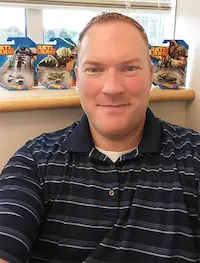

Matthew Tilton | WDD 130
Hello, my name is Matthew Tilton. I live in Spanish Fork, Utah. I am married and have five children. My youngest is 18. I have worked in the network and systems administration field for the past twenty-six years. I have held my most recent position for twenty-one years. In what you could call my spare time, I like to hunt and fish, and roam the great mountains in my area. A few of my favorite places are the temple, the mountains, Arches National Park, Yellowstone, High Uintas, Montana. I would love to visit Alaska, the Redwood Forest, and church historical sites.